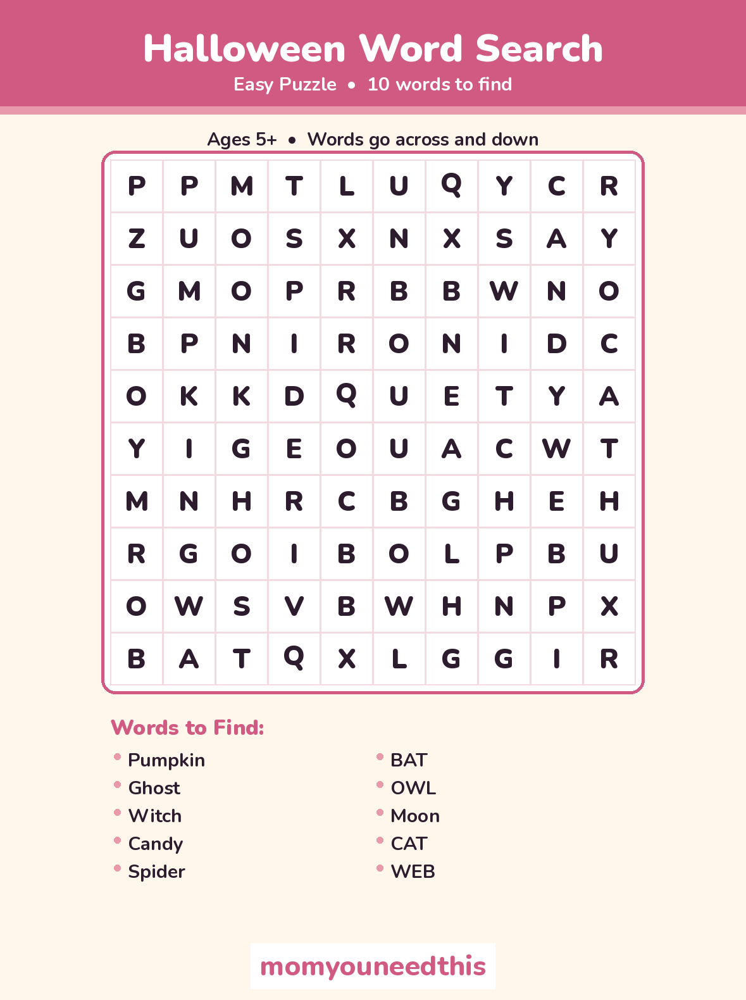
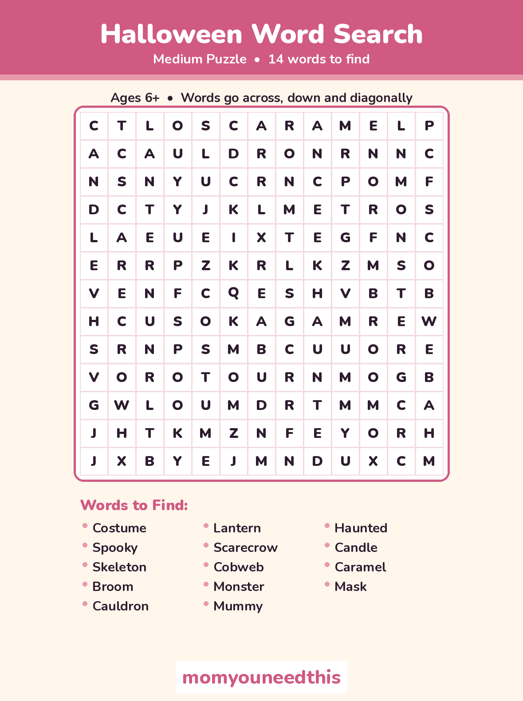
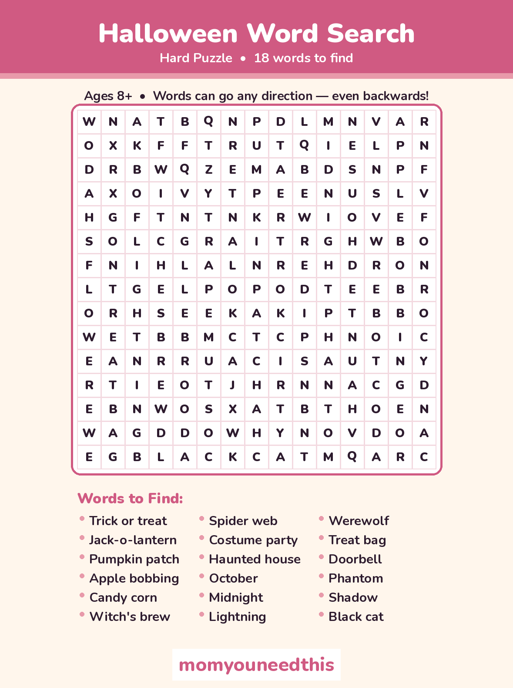
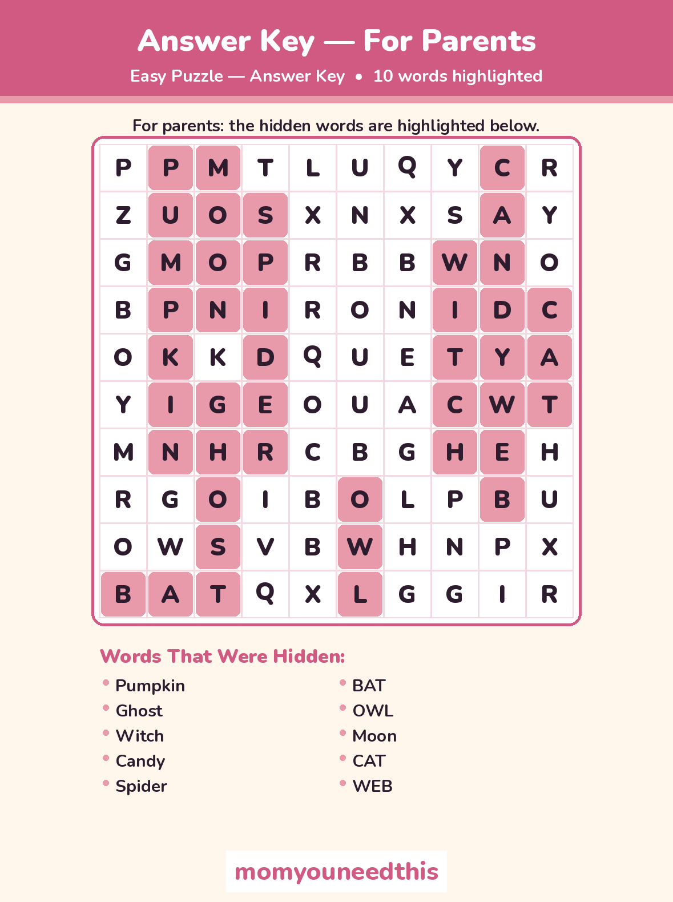
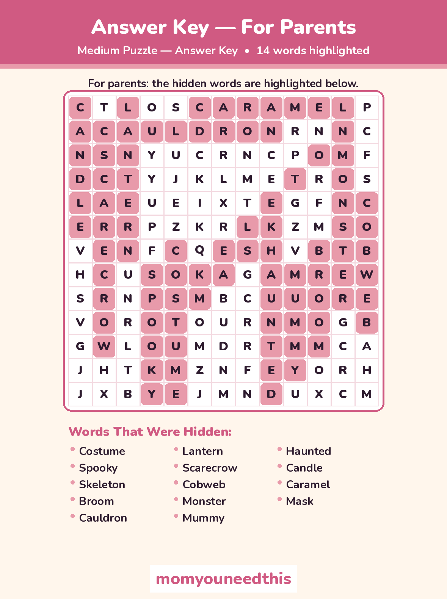
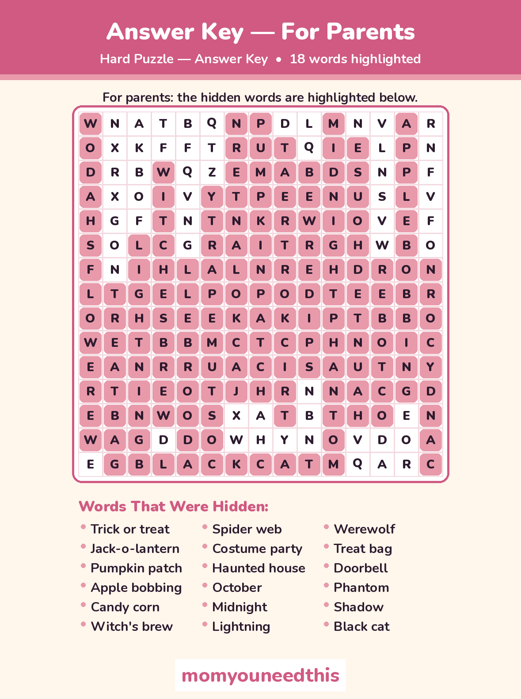

Halloween Word Search Printable 3 Free Puzzles — Easy, Medium & Hard
Looking for a not-too-spooky Halloween activity? This Halloween word search printable set gives kids three graded puzzles — start easy with ghosts and candy, then work up to skeletons and cauldrons. Print a puzzle, grab a pencil, and hunt for Halloween words hidden across, down, diagonally and even backwards.
Last updated: October 25, 2026
Quick Answer
This free Halloween word search printable set includes three puzzles: an easy 10×10 grid with 10 words, a medium 13×13 grid with 14 words, and a hard 15×15 grid with 18 words. Every puzzle comes with a parent answer key, and all six sheets are free to print at home.
At a Glance
- Puzzles: 3 — Easy, Medium & Hard
- Words to find: 42 total (10 + 14 + 18)
- Grids: 10×10, 13×13 & 15×15
- Printables: 6 sheets — 3 puzzles + 3 answer keys
- Ages: 5+ for Easy, 8+ for Hard
- Cost: Free — print at home
🎃 Pick Your Level
Three puzzles, three levels of challenge — so a new reader and an older sibling can each hunt at their own pace with the same spooky-season word list feeling. Every word here is kid-gentle: costumes, pumpkins and candy, nothing gory.
Easy — 10×10 grid, 10 words.
Words run across and down only, and they are short and familiar: pumpkin, ghost, witch, candy, spider and bat. A gentle first word search for ages 5 and up.
Medium — 13×13 grid, 14 words.
Diagonals join the hunt, and the words grow up a little: costume, spooky, skeleton, cauldron, scarecrow and cobweb. Best for ages 6 and up.
Hard — 15×15 grid, 18 words.
Words can run in any direction — including backwards. Trick or treat, jack-o-lantern, pumpkin patch, apple bobbing and candy corn are in there somewhere. A real challenge for ages 8 and up.
🧠 Why Word Searches Are Quiet, Real Practice
A word search looks like a quiet-time game, and it is — but a child scanning a grid for the letters G-H-O-S-T is doing focused letter recognition the whole time. Matching the word on the list to a string of letters in the grid builds the habit of looking at how words are spelled, letter by letter and in order, which is the same attention early reading asks for.
The second skill is patience. A hidden word does not announce itself, so kids learn to scan slowly, row by row, and keep going when the first pass turns up nothing. That makes a puzzle a handy calm activity for a Halloween party, a classroom celebration or the excited wait for trick-or-treating — all of the spooky-season fun with nothing gory or truly scary.
✂️ Print Your Halloween Word Search Printable Puzzles
Choose a free Halloween word search printable below and print the puzzle on its own — every puzzle sheet is unsolved, with its word list printed right under the grid. The three answer keys sit below the puzzles, clearly marked for parents, so help is nearby without spoiling the hunt.

✂️ Download Your Free Easy Word Search
Easy puzzle — 10×10 grid, 10 words, across and down only.
⬇️ Download Free Easy Puzzle 🖨️ Print🎁 Free printable for ages 5+

✂️ Download Your Free Medium Word Search
Medium puzzle — 13×13 grid, 14 words, with diagonals.
⬇️ Download Free Medium Puzzle 🖨️ Print🎁 Free printable for ages 6+

✂️ Download Your Free Hard Word Search
Hard puzzle — 15×15 grid, 18 words, any direction, even backwards.
⬇️ Download Free Hard Puzzle 🖨️ Print🎁 Free printable for ages 8+

✂️ Download the Easy Answer Key — For Parents
Easy answer key — all 10 words highlighted in the grid.
⬇️ Download Free Answer Key 🖨️ Print🎁 Free printable for parents

✂️ Download the Medium Answer Key — For Parents
Medium answer key — all 14 words highlighted in the grid.
⬇️ Download Free Answer Key 🖨️ Print🎁 Free printable for parents

✂️ Download the Hard Answer Key — For Parents
Hard answer key — all 18 words highlighted in the grid.
⬇️ Download Free Answer Key 🖨️ Print🎁 Free printable for parents
🔑 A Note on the Answer Keys
The keys are separate sheets on purpose — one per puzzle, with every word circled in place, from GHOST in the easy grid to JACK-O-LANTERN in the hard one. Keep them hidden until the hunting is done; the joint check at the end closes the hunt properly, instead of spoiling one still in progress.
🖨️ How to Use These Word Searches
- Pick a level. Start younger kids on the Easy puzzle and let older kids jump straight to Medium or Hard — every level uses its own grid and word list.
- Read the word list together. Say each word out loud before the hunt starts. A child who has just heard and read 'skeleton' spots its letters much faster.
- Hunt, circle, cross off. Circle each word in pencil as it is found, then cross it off the list under the grid so the remaining words stay easy to track.
- Check it together. When the list is done — or one word will not budge — open the matching answer key and find the last words side by side.
🎃 A Word Search for Every Season
🎄 Christmas Word Search
Three festive puzzles with 42 Christmas words, from Santa to gingerbread. Try the Christmas puzzles.
❄️ Winter Word Search
Three graded winter puzzles with parent answer keys — snow and ice to start, avalanche to finish. Try the winter puzzles.
🌷 Spring Word Search
Three graded spring puzzles with parent answer keys — tulips and rain to start, hummingbird to finish. Try the spring puzzles.
☀️ Summer Word Search
Three graded summer puzzles with beach, watermelon and ice cream words. Try the summer puzzles.
🐰 Easter Word Search
Three graded Easter puzzles with eggs, bunnies and spring garden words. Try the Easter puzzles.
❓ Halloween Word Search FAQ
Is this Halloween word search printable really free?
Yes — all three puzzles and all three answer keys on this page are free to download and print at home, with no signup. Print one copy or a whole stack for a class Halloween party.
What ages are these word searches for?
The easy 10×10 puzzle suits most kids from about age 5, the medium 13×13 puzzle from about age 6, and the hard 15×15 puzzle — with diagonals and backwards words — from about age 8. Younger children can still enjoy the easy grid with an adult hunting alongside.
Are these puzzles too scary for young kids?
No — this set keeps Halloween friendly: costumes, candy and cartoon ghosts, nothing gory and nothing that jumps out. If your child is new to word searches as well as sensitive to spook, the Easy puzzle is doubly gentle — smallest grid, shortest words, straight lines only.
Can I print these puzzles for my classroom?
Yes — print as many copies as your class needs. Each puzzle is a single sheet with its word list on the same page, and the matching answer key is a separate sheet you can keep at your desk.
Are the answers included?
Yes — every puzzle has its own answer key sheet, clearly titled 'Answer Key — For Parents', with each hidden word highlighted in the grid. The keys are separate downloads above, so the puzzle sheets themselves stay unsolved.